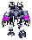
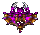
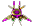

Auditoría interna · Repositorio Gano Digital
Generado para el equipo de desarrollo. PDF versionado: memory/audits/gano-digital-auditoria-desarrolladores-*.pdf · Regenerar con python scripts/generate_dev_audit_pdf.py
| Métrica | Valor |
|---|---|
| Líneas CONSTELACION-COSMICA.html | 2 922 |
| Muestras WAV (sounds/agentcraft) | 29 |
Skills documentadas (.gano-skills, sin _reference) | 15 |
| Retratos facción (PNG) | 3 |
| Sistemas en órbita | 1 núcleo + 8 cuerpos |
PNG estilo worker por facción (pixel-art). Animación en el panel: CSS (portraitLive). Sin secuencias GRP del juego en git.



CONSTELACION-COSMICA.html): órbitas, tooltip, panel briefing, pools de audio por facción.syncPointer, raycast con proximidad, exclusión UI vs canvas.gano-starcraft1-assets-constellation + memory/research/starcraft1-assets-sota.md..cursor/rules/102-constellation-and-gano-skills.mdc..gitignore: excepción memory/audits/*.pdf; ignorados vendor/ y .obsidian/.TASKS.md.Vista imprimible: use el navegador (Ctrl+P → Guardar como PDF) si necesita otra copia además del PDF generado por script.